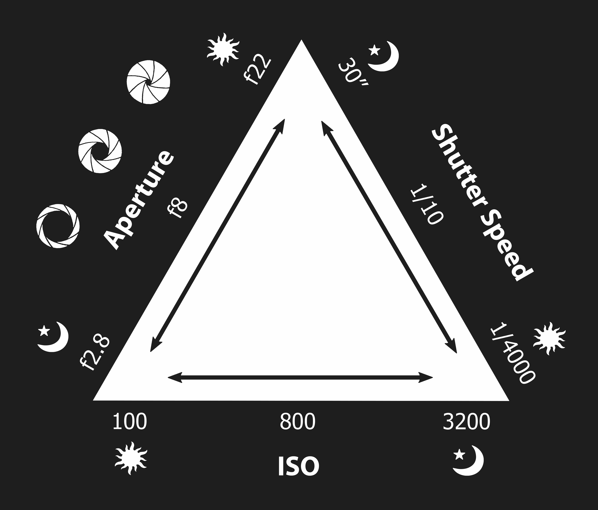

Understanding the Exposure Triangle
If you want to take great photos, you need to understand exposure, and the Exposure Triangle is the foundation of photography. If you’re new to photography, you can get away with taking respectable pictures right out of the box using automatic settings. However, if you want to produce quality images, you need to have a solid grasp of this basic concept before moving on to the next level. Look at it this way; exposure is to the photographer, what measuring is to a carpenter. It’s an essential skill. Understanding what exposure is and how it works is an important first step in becoming a good photographer.
What Is the Exposure Triangle?
Exposure in photography is all about light, and the process of controlling how much light hits the digital sensor in your camera to produce an image. You could say exposure is an umbrella term for controlling the lightness or darkness of a photo.
Three main ingredients or elements work together in exposure: Aperture, Shutter Speed, and ISO. The Exposure Triangle is described as the foundation for photography. Once you understand how it works, you’ll be able to take better photos using the various settings on your camera.
It is suggested that you look at the previous lessons before diving into this one as it's important to understand what Shutter Speed, Aperture, and ISO are.
Putting It All Together
Let’s put the three components together: ISO, aperture, and shutter speed. A good tip is to keep each component constant. Let’s say you choose to keep the shutter speed constant (you won’t change this component). The next component you’ll have to focus on is the aperture value and ISO. If you are using a wide aperture, you may want to lower your ISO, so your photo doesn’t overexpose. You’ll want to slowly fine-tune the values until you get the exposure you want.
It’s easier said than done, but with a bit of experimentation and practice, you’ll be putting all three components together in no time!

1. Try not to go lower than 1/50 for the shutter speed, especially if you are hand-holding your camera. Going any lower is tough in achieving sharp-looking photos.
2. If you have to use a fast shutter speed, make sure you use a lens that allows for wide apertures (f 1.4, 1.8, f.2). This will give you more lighting control. Bump up your ISO as well.
3. If you can, use the lowest ISO possible. This is key to getting the highest quality photos without the image noise.
4. If you’re adjusting one part of the exposure triangle, you probably will have to adjust the other. This is not the only way to memorize and learn about photography exposure, but we think it’s a great way to see the relationship between all three and how they relate to each other.
In Conclusion
always relate exposure to how much light is entering your camera sensor. We can control how much light enters through these three components – ISO, Aperture, and Shutter Speed.
- Aperture – how large the lens opening is.
- Shutter Speed – how long the shutter remains open.
- ISO – how sensitive the sensor is.
Memorizing these three components will ensure you are on your way to mastering exposure, which plays a huge chunk in photography!